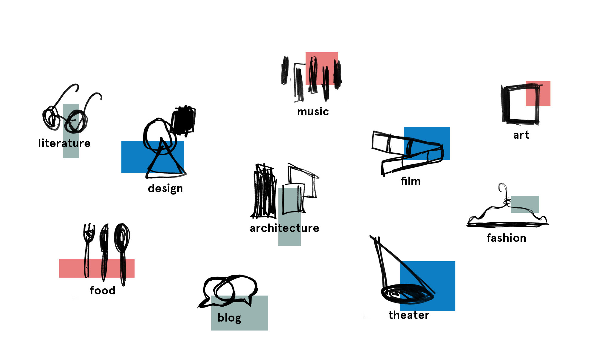

Lot 4/TP866378
Dane-is-culture
Fødekæden
Oliver
Johnston St Vet Clinic
Lars Batting's Bakery
Website concept and branding – Dane-is-culture
A project to brand Denmark as a leading cultural nation. Our concept was to place Denmark on the cultural world map through the idea of a cultural umbrella site. Different cultural areas are introduced to the visitor by showing selected works in a portfolio-style site – just like an artist. Each month the site will be updated with new and classic cases, told by both students and professionals, to give a nuanced picture of Danish culture.
The concept was named Dane-is-culture ["Danish" culture], allowing a dynamic logo with a carousel on the ending: Dane-is-film, Dane-is-art, Dane-is-literature and so on.
This project was made in collaboration with Julie Plovgaard and Karoline Kastbjerg Schroeder. Music by Frederik Keglberg.
